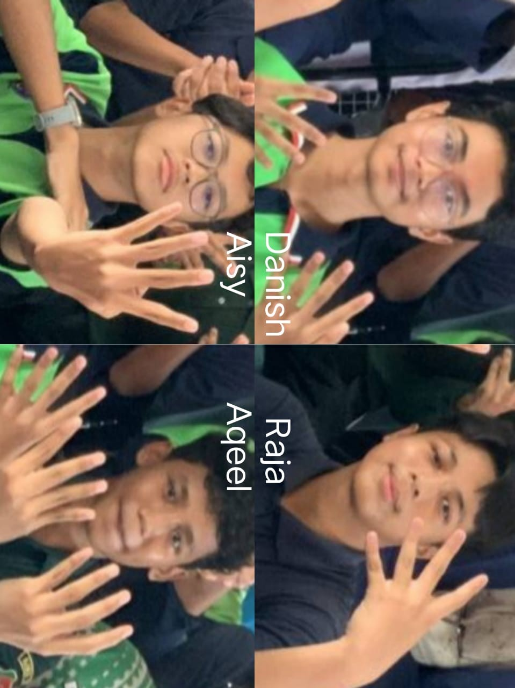
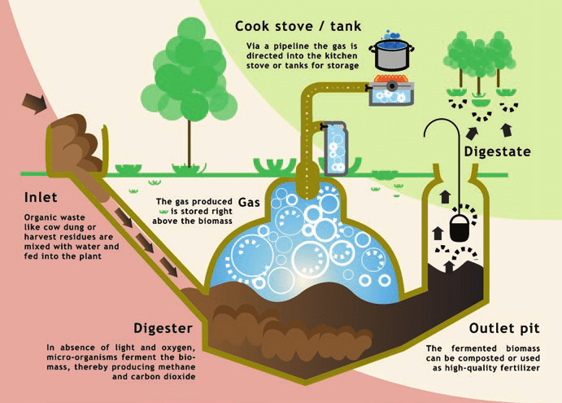
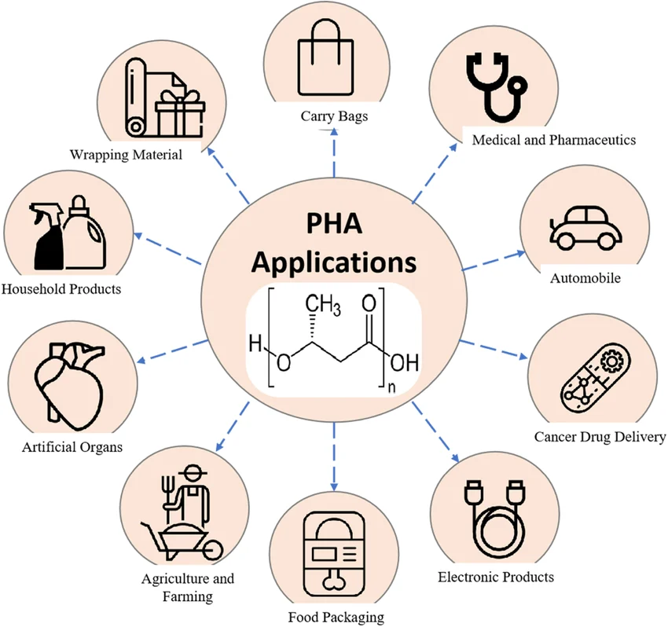
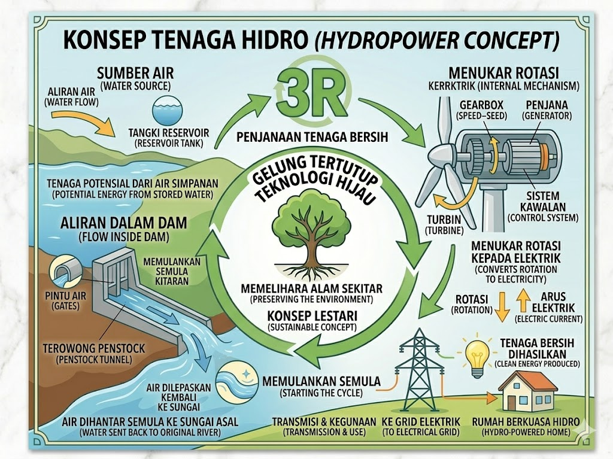
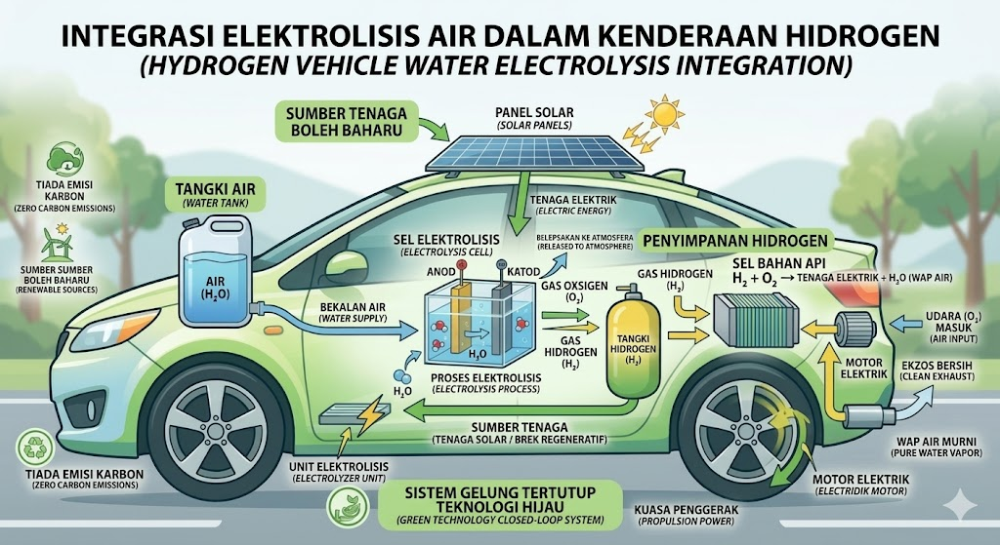
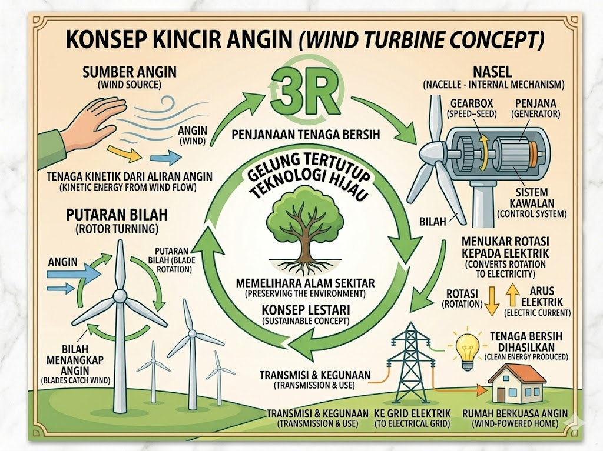
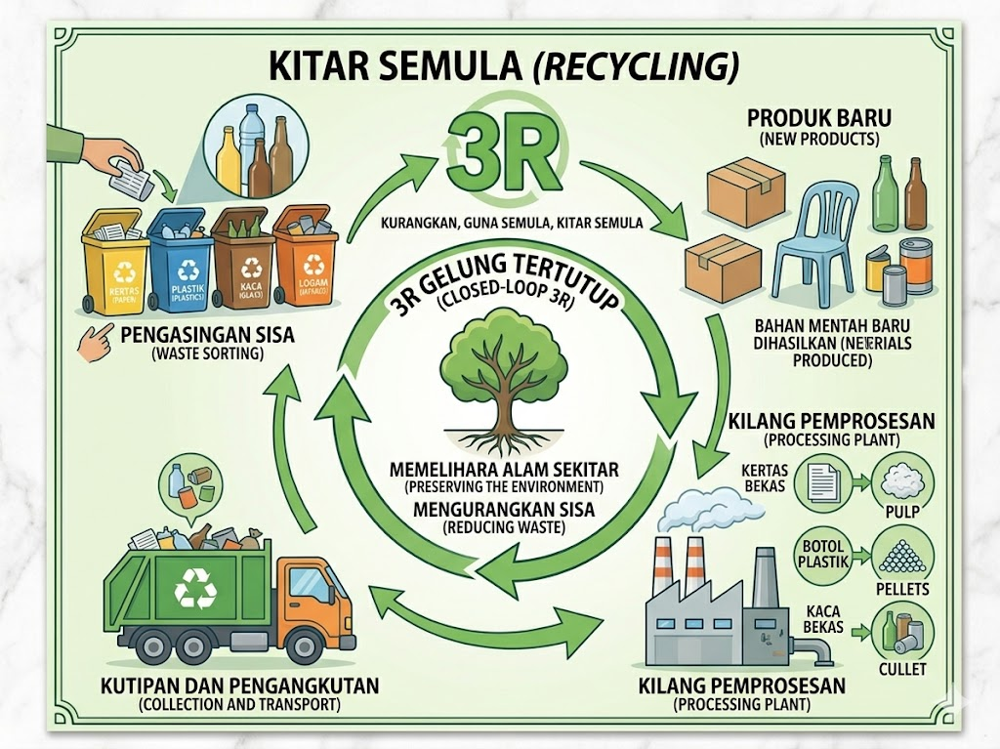

Mengenai 4 D.A.R.A

Filosofi & Identiti Pasukan
Pasukan 4 D.A.R.A dibentuk berdasarkan aspirasi untuk menggabungkan kepakaran teknologi digital dengan kesedaran ekologi. Nama kami merupakan akronim daripada Danish, Aisy, Raja, dan Aqeel—empat individu yang membawa perspektif berbeza dalam pembangunan web interaktif ini. Angka '4' melambangkan kestabilan struktur pasukan dalam melaksanakan penyelidikan mengenai Teknologi Hijau.
Visi Strategik
Kami bermatlamat untuk menyediakan platform pendidikan yang mampu mengubah persepsi masyarakat terhadap sisa kimia. Melalui kajian kes di SMKBTHO2, kami ingin membuktikan bahawa sisa harian jika diurus dengan Teknologi Hijau, mampu menjadi sumber tenaga boleh baharu yang efisien.
Arkib Ilmu Teknologi Hijau
1. Analisis Gas Metana (CH4)

Gas Metana merupakan gas rumah hijau yang mempunyai kekuatan memerangkap haba 28 kali lebih efisien berbanding Karbon Dioksida ($CO_2$). Di Malaysia, tapak pelupusan sisa pepejal menyumbang hampir 50% pelepasan metana negara. Melalui Teknologi Hijau, metana dikumpul melalui sistem paip bawah tanah (Landfill Gas Recovery) untuk diproses menjadi Biogas bagi menjana tenaga elektrik bersih (Waste-to-Energy).
2. Revolusi Bioplastik: PHA

Polyhydroxyalkanoates (PHA) adalah polimer linear yang dihasilkan secara semula jadi oleh bakteria melalui proses penapaian gula atau lipid. Keunikan utama PHA adalah sifatnya yang biokompatibel dan biodegradasi secara total. Ia mampu terurai dalam persekitaran semula jadi tanpa meninggalkan sisa toksik atau mikroplastik, menjadikannya pengganti terbaik bagi plastik berasaskan petroleum.
3. Tenaga Solar & Hidrogen Hijau


Sistem solar berfungsi berasaskan Kesan Fotovoltaik, di mana sel semikonduktor silikon menukarkan foton cahaya matahari terus kepada elektron bebas. Manakala Hidrogen Hijau dihasilkan melalui proses elektrolisis air menggunakan tenaga bersih. Ia dianggap sebagai bahan api masa depan kerana tidak menghasilkan emisi karbon, hanya wap air ($H_2O$).
4. Tenaga Kinetik & Ekonomi Kitaran


Turbin angin mengeksploitasi tenaga kinetik udara untuk memacu generator elektrik. Digabungkan dengan konsep Ekonomi Kitaran (Circular Economy), sisa bahan mentah direka untuk digunakan semula (Cradle-to-Cradle), sekaligus mengurangkan penggunaan tenaga pembuatan sehingga 90% dan meminimumkan beban sisa di tapak pelupusan.